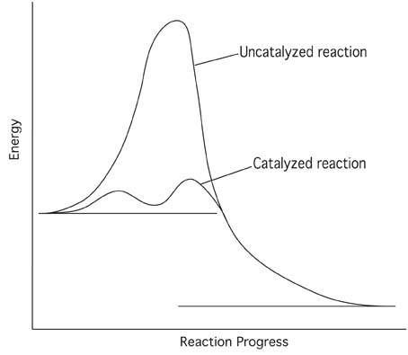

The action that the women took to challenge the existing gender discrimination during the 1950s and 1960s would have never occurred without the influence of Elizabeth Zott, the catalyst in the reaction. Elizabeth Zott's role as a public figure was the push necessary to encourage women across the country to question existing societal norms.
This diagram demonstrates the ability of a catalyst to speed up reactions by reducing the amount of energy necessary for the reaction to occur. This closely resembles the role of Elizabeth Zott in catalyzing the societal changes that women seek to combat gender discrimination by helping them unite into an organized effort to challenge societal norms.
“CHEMISTRY IS CHANGE, she wrote. Whenever you start doubting yourself,” she said, turning back to the audience, “whenever you feel afraid, just remember. Courage is the root of change -- and change is what we’re chemically designed to do.”
This quote shows Elizabeth Zott using her popularity and credibility among women to encourage them to work towards change. Through her confidence and relatability, she gains the respect of women around the coutnry, allowing her to easily motivate them to take action against the injustices they face.